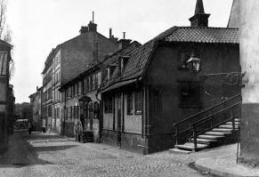
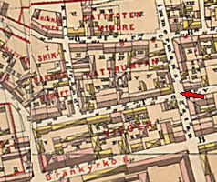
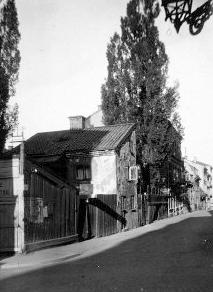
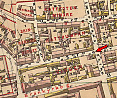
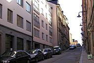
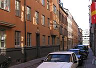
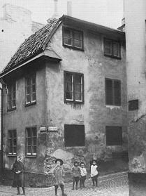
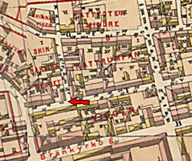
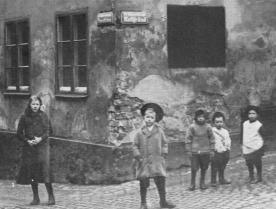

Södermalm i tid och rum. Stockholm


Tavastgatan 30, 32, 34 västerut från Timmermansgatan.


Tavastgatan 31-41 västerut från Timmermansgatan.
|
  2004. Tavastgatan österut. Nr 29 till höger. Längst upp till vänster syns nr 16. 2004. Tavastgatan österut. Nr 29 till höger. Längst upp till vänster syns nr 16.
|
  2004. Tavastgatan västerut. Nr 31 till vänster. 2004. Tavastgatan västerut. Nr 31 till vänster.
|


Tavastgatan 44 i hörnet av Kattgränd. Västerut.
